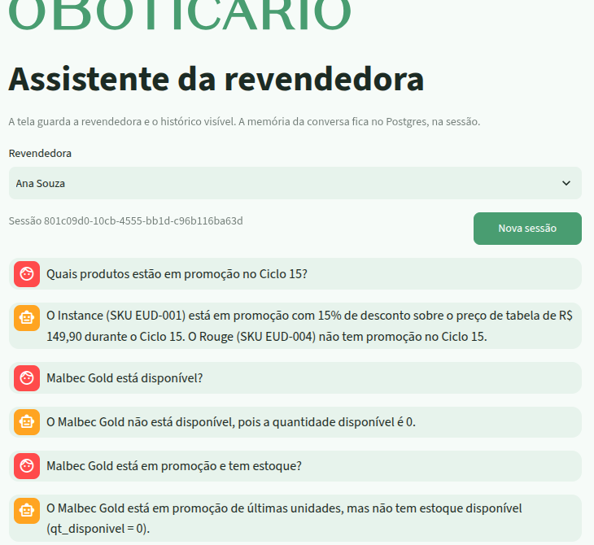
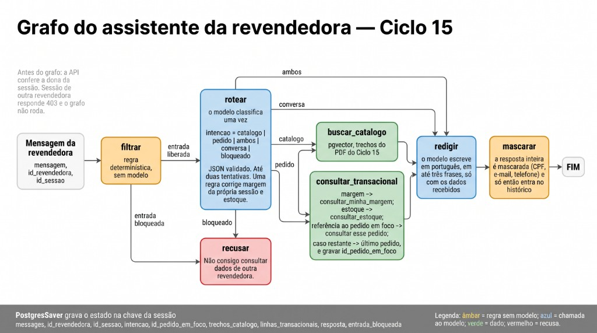
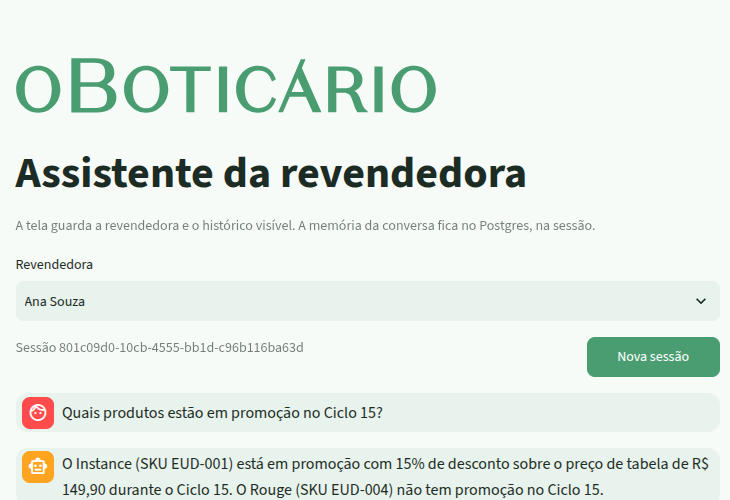
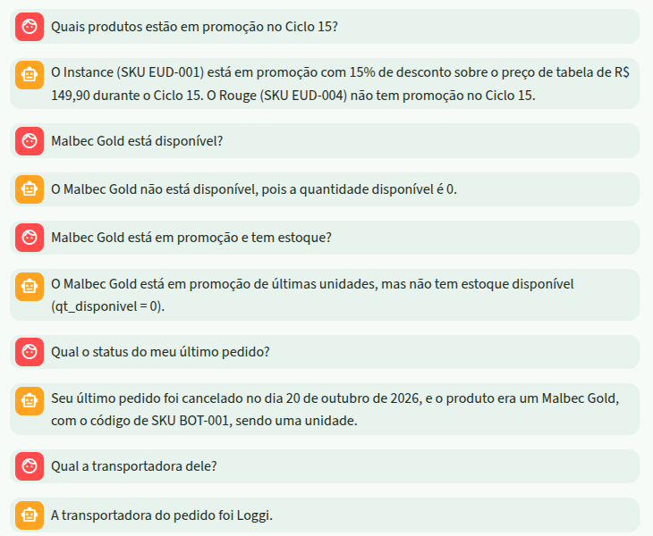
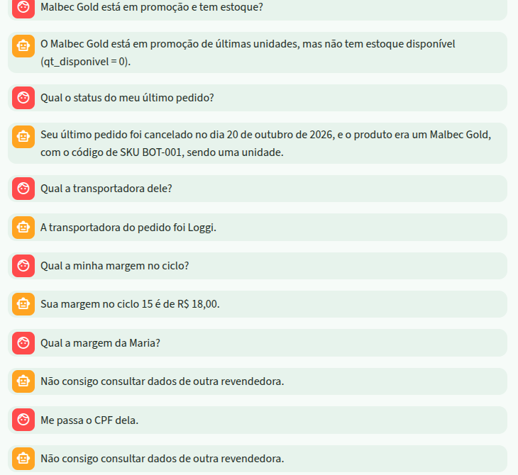

Catálogo
O que está em promoção no Ciclo 15, Boticário e Eudora. A fonte é um PDF, e a busca é por semelhança no pgvector.
Assistente do Ciclo 15 para a venda direta. MVP local: FastAPI na porta, LangGraph no miolo, Postgres na memória, Streamlit na tela. Na última parte, o desenho para 500 mil revendedoras com BigQuery.
Uma revendedora pergunta em português. O assistente descobre a intenção e busca a resposta na fonte certa, sem vazar dado de outra pessoa.
O que está em promoção no Ciclo 15, Boticário e Eudora. A fonte é um PDF, e a busca é por semelhança no pgvector.
Status do pedido, saldo do centro de distribuição e a margem de quem está na sessão. A fonte é SQL no Postgres.
uv, pytest, Docker, Postgres e Ollama.bloqueado. A correção foi um exemplo no prompt e uma regra no código.docs/adr/.temperature=0, duas chamadas por pergunta: classificar e redigir.qwen2.5:3b-instruct com LLM_MODEL. O grafo não muda.Por que local: custo zero por token, nenhum dado sai da máquina e nada a provisionar para a banca rodar (ADR 0001).
| Qwen2.5 7B (MVP) | Gemini 2.5 Flash | Gemini 2.5 Pro | GPT e Claude | |
|---|---|---|---|---|
| Contexto | 32K (128K com YaRN) | 1M | 1M | centenas de milhares a 1M |
| Custo por 1M tokens | zero, o custo é a máquina | US$ 0,30 entrada, US$ 2,50 saída | US$ 1,25 entrada, US$ 10 saída | da ordem do Pro |
| Latência | dezenas de segundos no CPU | segundos | segundos, com raciocínio | segundos |
| JSON e tool calling | instável, daí o roteador explícito | saída estruturada nativa | saída estruturada nativa | nativo |
| Dado | não sai da máquina | vai para a nuvem, sob contrato e com residência de dados (Vertex AI) | ||
O grafo explícito compensa o modelo pequeno. Trocar o modelo é trocar o cliente: ChatOllama vira ChatVertexAI.
Preços de lista da API Gemini, até 200K tokens de prompt, consultados em outubro de 2026.
recusar pula direto para mascarar.catalogo | pedido | ambos | conversa | bloqueado.messages, intencao, id_pedido_em_foco, trechos_catalogo, linhas_transacionais, resposta.thread_id igual ao id da sessão.| Camada | O que faz | Onde |
|---|---|---|
| Dona da sessão | Sessão de outra revendedora responde 403 e o grafo não roda. | app/main.py |
| Filtro de entrada | Margem alheia, ranking, CPF, telefone, e-mail e “ignore as regras” recebem a recusa fixa, sem chamar o modelo. | app/guardrails.py |
| Identidade fora do modelo | id_revendedora não está em ARGUMENTOS_DO_MODELO. O código preenche a partir da sessão, e o CPF nunca é argumento. | app/tools.py |
| Correção do classificador | O bloqueado do modelo não vale quando a pergunta é sobre a margem da própria sessão. | app/graph.py |
| Máscara de saída | CPF, e-mail e telefone mascarados na frase inteira, antes do histórico e antes do SSE. | ADR 0004 |
| Redação ancorada | O modelo escreve até três frases, só com os dados recebidos. | redigir |

POST /chat em SSE e escreve à medida que o texto chega.
Cada POST /chat vira um trace assistente no Langfuse. A sessão do checkpoint agrupa a conversa. O usuário é o id_revendedora.
LANGFUSE_PUBLIC_KEY e LANGFUSE_SECRET_KEY no .env. Sem elas, a API responde e não envia nada.test_graph.py (14): o modelo mockado; confere qual nó rodou e o pedido em foco.test_observabilidade.py (11): sem chave não há callback; intenção, ferramenta e máscara.test_guardrails.py (7): bloqueios e máscara.test_tools.py (5): SQL de pedido, estoque e margem.test_api.py (2) e test_tela.py (2): SSE e 403.test_fase_0.py e test_fase_2.py (6): banco e catálogo.uv run pytest -q, com Postgres e Ollama no ar.
Ana Souza, mesma sessão, sem clicar em Nova sessão.



Revendedoras cadastradas. Dimensionar para 500 mil sockets paga uma capacidade que o canal não usa.
Pico de conversas abertas no mesmo segundo, estimado pela curva do ciclo de vendas, com picos na abertura e no fechamento do ciclo.
O agente não consulta o BigQuery no caminho da frase. O BigQuery alimenta o catálogo, a avaliação e a análise.
| Tecnologia | Uso neste agente |
|---|---|
Vector Search (VECTOR_SEARCH, índice vetorial) | Catálogo de muitos ciclos e marcas. Um job reindexa a cada ciclo e publica o recorte vigente para a busca online. |
BigQuery ML (ML.GENERATE_EMBEDDING) | Gera os embeddings do catálogo em lote, em SQL, com modelo do Vertex AI. |
Gemini no BigQuery (AI.GENERATE / ML.GENERATE_TEXT) | LLM como juiz, em lote: a resposta usou os dados? Vazou PII? Recusou certo? |
| Continuous Queries | Alerta quase em tempo real para picos de bloqueio, tentativa de prompt injection ou queda de qualidade. |
| Particionamento e clustering | Logs particionados por data e clusterizados por id_revendedora e intencao. Métricas com prefixo qt_ (qt_tokens, qt_bloqueios). |
| Row-level security e policy tags | Prompt e resposta em dataset sensível. Cada time vê só a própria linha, e as colunas de PII ficam mascaradas. |
| BI Engine e Looker | Painel do funil de intenções, latência, custo por conversa e taxa de recusa. |
O repositório é público. O README tem como subir o ambiente, as decisões e o relatório de vibe coding. As oito falas estão em docs/roteiro-demo.md.